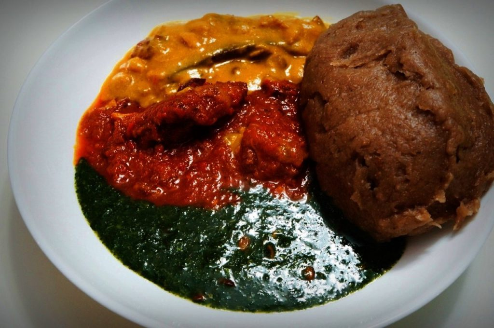
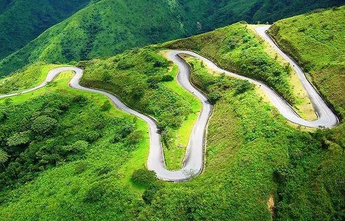
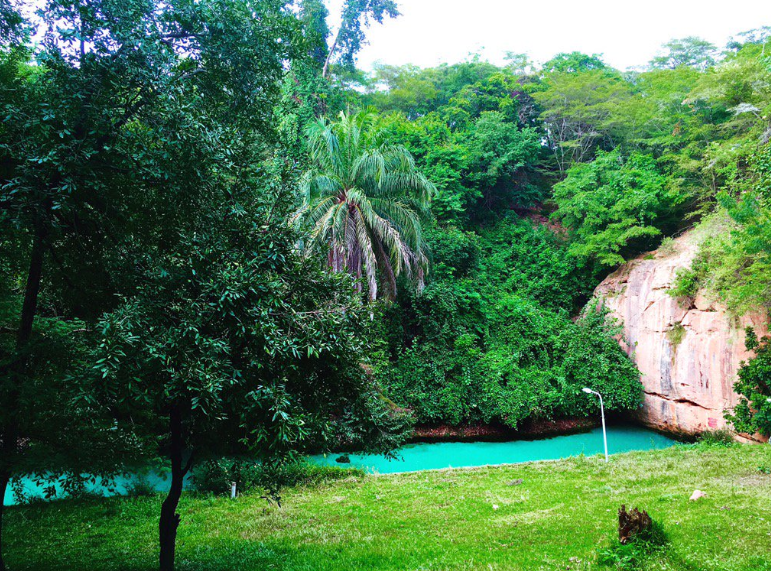

Top three activities to do when you visit Nigeria.

The famous Afang cuisine
The Afang Soup is indigineous to the people of Calabar people located in Cross River, Nigeria.

The Obudu Mountain Resort
If you are a tourist looking for a mix of adventure and idyllic tranquillity, then Obudu is the place to be. With rich natural vegetation and view.

The Obudu Mountain Resort
Yankari National Park is a large wildlife park located in the south-central part of Bauchi State in northeastern Nigeria.